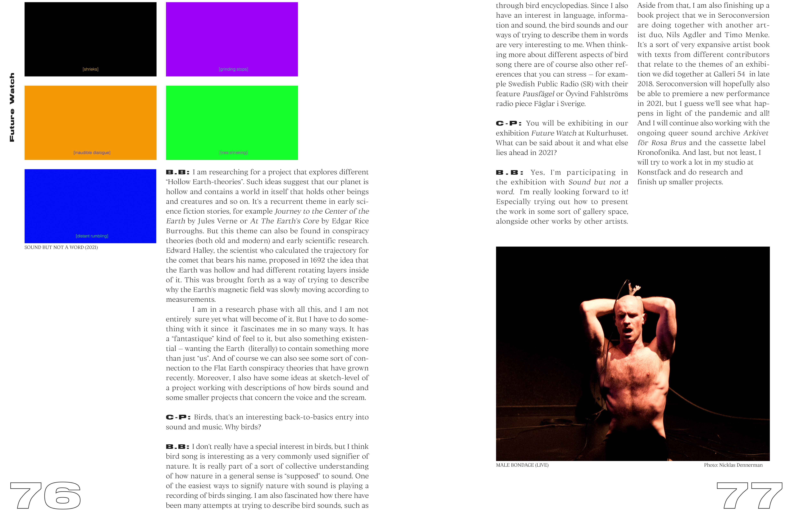
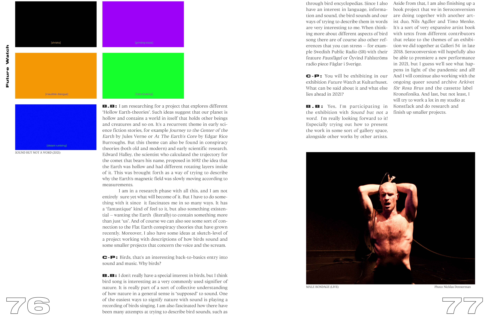

{kind=link}
{kind=link}
{kind=link}
{kind=link}
^ INTERNSHIP/Book Design Proposal/June 2021
I got the opportunity to spend two weeks with Håkan Liljemärker at Studio Liljemärker.


^ EXHIBITION/Marabouparken/
May 2021
Title, identity, concept and catalogue for "New Dimensions - Post Degree Exhibition" at Marabouparkens Konsthall in Stockholm.
This project was a collaboration with Vanja Ivarsson and Mikaela Cederholm. We developed a custom typeface composed of three individual typefaces of our own. The catalogue was printed in riso and sewn by hand.

 



^ZINE/C-print Future Watch Issue/April 2021
Me and my class at Konstfack designed a special edition physical issue of the online contemporary art journal C-print.
We were divided into two groups, one for illustration and one for a graphic design. In the graphic design group we designed a visual identity and template for the whole layout and then we did a few spreads each were we followed that visual template.
(08.09.21)
Currently on an exchange semester in Zürich, Switzerland at Zhdk
(30.05.21)
Internship at Studio Liljemärker
(2021-)
Zürich University of the Arts: BA Visual Communication
(2019-)
Konstfack University of Arts, Crafts and Design: BA Graphic Design & Illustration
(2017-2018)
Nackademin: 3D-Printing Designer
(2016-2017)
Fridhems Folkhögskola: Painting
^Back to top
© Joel Järvi 2021